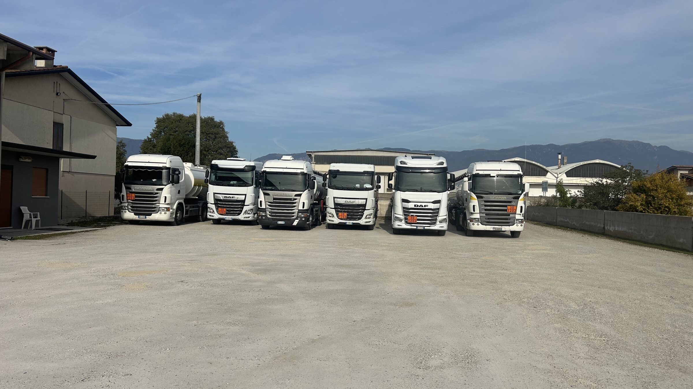

Avvicinamento lento
La foto si ingrandisce pianissimo, di un sedicesimo in mezzo minuto. È il movimento più usato dai siti industriali: si nota appena, ma toglie l'effetto «cartolina ferma».
Carrellata laterale
La foto scorre lentamente di lato, come una macchina da presa su binario. Funziona bene quando il soggetto è largo — una fila di mezzi — perché li fa scoprire uno a uno.
La luce che cresce
La foto parte scura e si schiarisce, mentre si avvicina appena: il turno che comincia col buio e finisce con la luce. È il movimento che racconta qualcosa, non solo che si muove — ha senso solo se il sito parla del turno di notte.
Video vero, generato dalla foto
Qui c'è un file video di 15 secondi, costruito dalla stessa foto: avvicinamento più una leggerissima oscillazione, che con i primi tre non si può fare. In cambio pesa 1 MB e va scaricato prima di partire.
Quello che non ho fatto, e perché
- Non ho usato l'intelligenza artificiale per animare la foto. Strumenti come Runway o Kling fanno muovere davvero le ruote e le nuvole, ma inventano i pixel: sulle vostre foto deformerebbero targhe, pannelli arancioni e scritte sui mezzi. Lo abbiamo già visto sulle immagini ritoccate, dove i numeri ADR sono diventati illeggibili. Su un sito di trasporto merci pericolose è il dettaglio sbagliato da falsificare.
- Il riferimento che mi hai dato non ha video. Ho controllato il sito di Gruppo Koala: nessun filmato, solo fotografie ferme. Il tema carica una libreria video che non viene mai usata.
- La cosa migliore resta un video vero. Trenta secondi girati col telefono — un mezzo che entra nel piazzale, i manicotti che si collegano — valgono più di qualsiasi movimento applicato a una foto. Se lo giri, lo monto io.